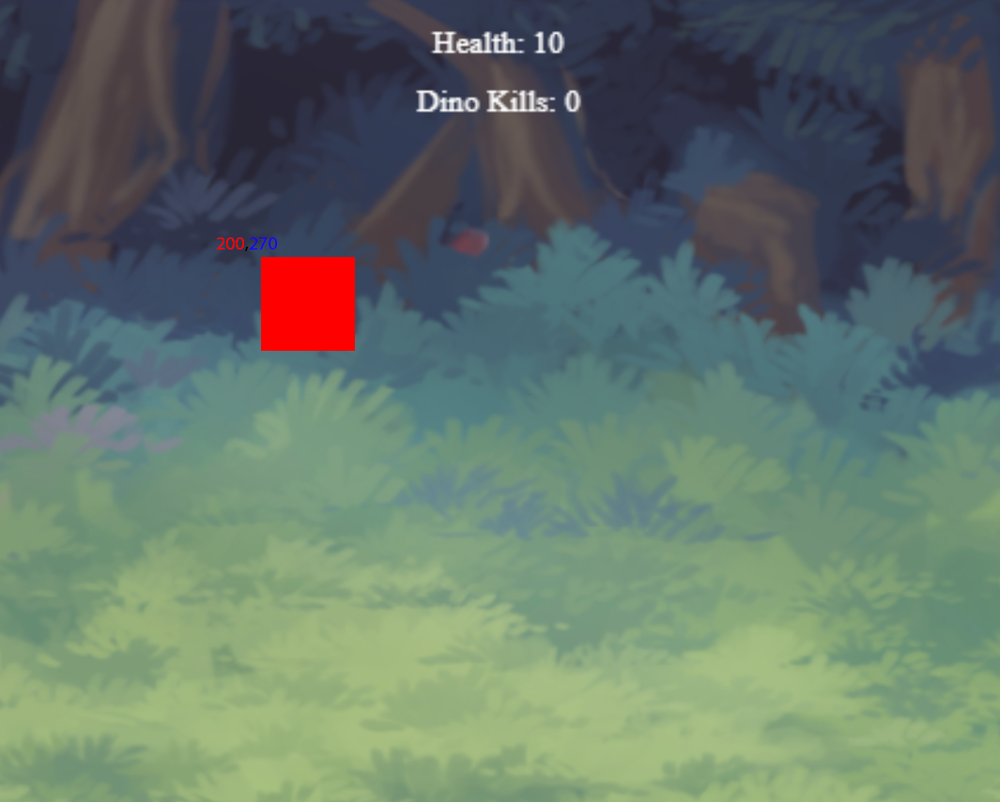
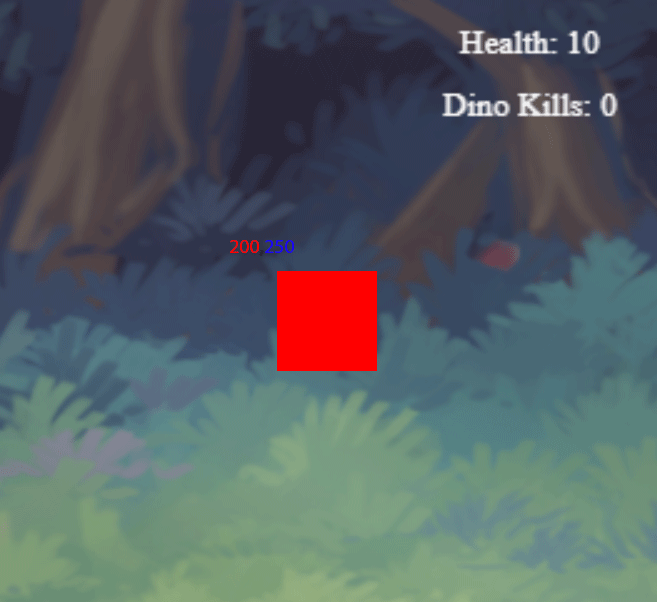

Dino Hunter
In this project, you're going to create a typing game themed around dinosaurs! Hunt. Survive. Type. This is a full-featured project and will draw on lessons you've learned at all of tutorial levels.
1. This project will make use of a wide variety of art, music, and even dictionary assets, listed here. Take a moment to familiarize yourself with the assets we will be working with. You will be copying these links for use in your project. If you've got the chops, feel free to make your own or use other assets.
Background Raptor Spritesheet Triceratops Spritesheet Baby Spritesheet Raptor Death Sound Triceratops Death/Roar Sound Compy Death Sound Bite Sound Background Music Word Dictionary{kind=link}
{kind=link}
{kind=link}
{kind=link}
2. Add a canvas element to your page, and make JavaScript variables for it and its 2D context.
3. Create your animation loop. This means loop through erasing the canvas and re-drawing items onto the canvas. If you've never used "requestAnimationFrame" now is a great time to learn. Draw the background image onto the canvas.
4. Create two variables, one to track player health and another to track score. Learn how to draw text onto a canvas and add them be drawn to the canvas in your loop.

5. Create a constructor that creates a "Raptor." It should have all the 2D properties like x, y, width, and height. Create one and assign it to a variable.
6. Give your raptor constructor another property, a "draw" function. When you call this function, the game should draw a red rectangle at the location of the Raptor onto the background.
7. Give your raptor constructor another property, a "move" function. When you call this function, your raptor should take a step down the screen.
8. Make an array and add your current testing Raptor to it. I'm going to refer to the array as the 'live' array but call it whatever is useful to you. Make a function called movement that runs on an interval. It loops through the array and calls the move function of every dino in the array. Your dino should move slowly to the bottom of the screen.

9. When your raptor reaches the bottom, it should reduce your health and be removed from the array. It should no longer be drawn or moved.
10. Make another function on an interval called spawner. This function should continuously create raptors at random locations along the top of the screen. Add them to your array of dinos to move.
11. Play the bite sound when a raptor reaches the bottom. Note: Most browsers block sound until you click or press a button in the window, so make sure you click on your screen after refreshing or else you might accidentally think it's broken. The same is true with the link below. It won't make the bite noise until you click inside.
12. Repeat all the previous steps for the Triceratops. Make another constructor for the Triceratops, write draw (make it a bigger blue rectangle) and move functions, and add them to the spawner.
13. Repeat all the previous steps for the Compys. Make another constructor for the Compys, write draw (make it a small green rectangle) and move functions, and add them to the spawner.)
14. Change the Triceratops to make it different than the Raptor. I recommend:
-> Make it roar when it spawns
-> Make it a much rarer spawn
-> Make it bite for more damage when it reaches the bottom
-> Make it move slower than the raptor
15. Now make the Compy different too! I recommend:
-> Make the Compy move randomly, but never backwards and never off screen
-> Make the Compy spawn much more commonly
16. Add Background Music to the game. Remember that browsers will block sound until you click or otherwise interact with the screen.
17. Okay! It's finally time to introduce... Typing! Research the Fetch function. Use it to retrieve the dictionary asset included above, split it on newline characters, and store it in a variable as an array.
18. Each Dino should add another property to their constructor, word! Raptors should be assigned a random word on construction from your dictionary array. Triceratops should be assigned three words, and Compys should be assigned a random letter instead.
19. Upgrade your Dino draw functions to draw their individual words above them. You have already used the drawText function all the way back in step 4. Give the text a background so as to be easier to see.
20. On key press, check every Dino's word to see if its first letter matches. If it does, delete it from the word.
21. Now you need to work with the Dino deaths. Create a new property in all the Dino constructors, a function called "kill." This function should remove the Dino from the 'live' array, give you points, and play the death sounds in the assets above.
22. If the Dino's word is gone, kill it! Finally!
23. The Raptors have a unique ability too! When they reach half-health (read: their word is half gone), they leap towards you! Focus on changing their move function to make them faster at half health or less for now.
24. Now it's time to integrate the sprite assets. Research the drawImage function and try drawing the Raptor spritesheet onto the game. Find and learn about the override that allows you to draw a clipped portion of an image. It's the override with nine arguments. Using your understanding of the drawImage function and it's clipping override, upgrade your draw functions to draw the first frame of each Dino's downward facing walking frames.
25. Upgrade your draw function to animate your dinos:
-> Switch to the next downward facing dino walk sprite every second, eventually cycling back to the first. Try moving your 'clip' around.
-> Give all the Dinos death animations that play when they die. You can find death sprites on the right side of the sprite sheets, except for the Triceratops. Either make one yourself or just make it back up into the trees.
-> Give your Compys unique animation frames based on what direction they are traveling.
-> Give your Raptors unique animation frames for leaping at you.
26. Show a Title Screen at the start. This can be as simple as showing some introductory message before the game begins.
27. Aaaand finally, add a Game Over Screen when your health reaches zero. This should remove all the current dinos and stop the spawner. It should also show your score. Wow. Congratulations, you just completed a massive project. Go ring that gong FIVE TIMES.
Bonus. You may have noticed in looking at my examples that some of my Dinosaurs travel at different speeds, even among the same type. Some of them even animate faster than others. That's because my Dinos actually have some random qualities to their size, speed, and animation speed. If you'd like a bonus challenge, make your Dinos unique individually as well. Surpass me and make them all different colors even!